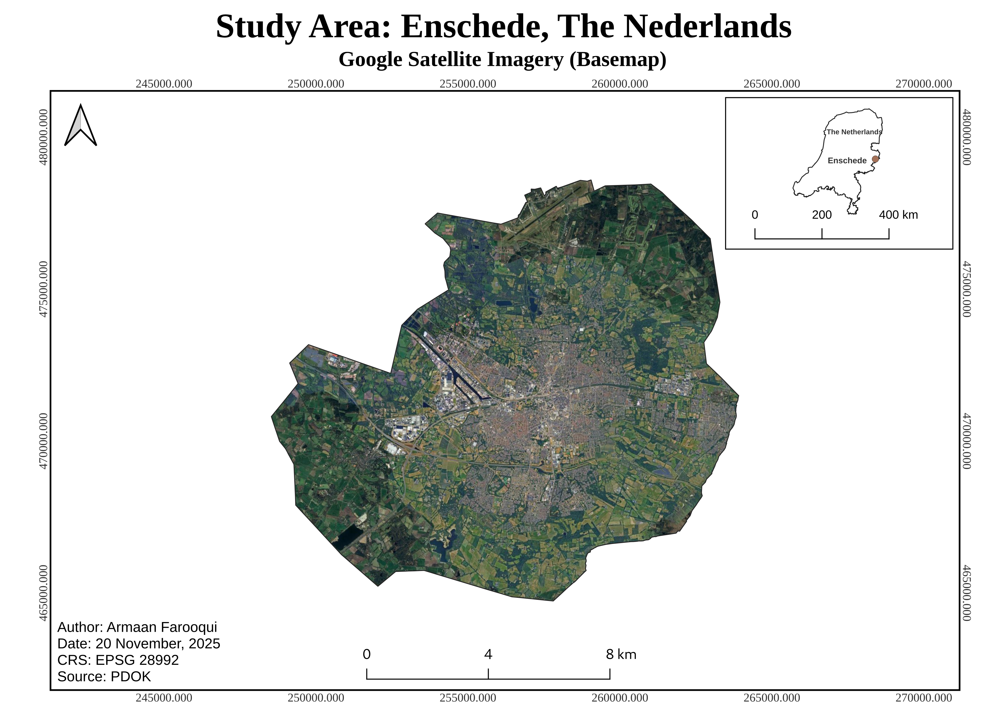
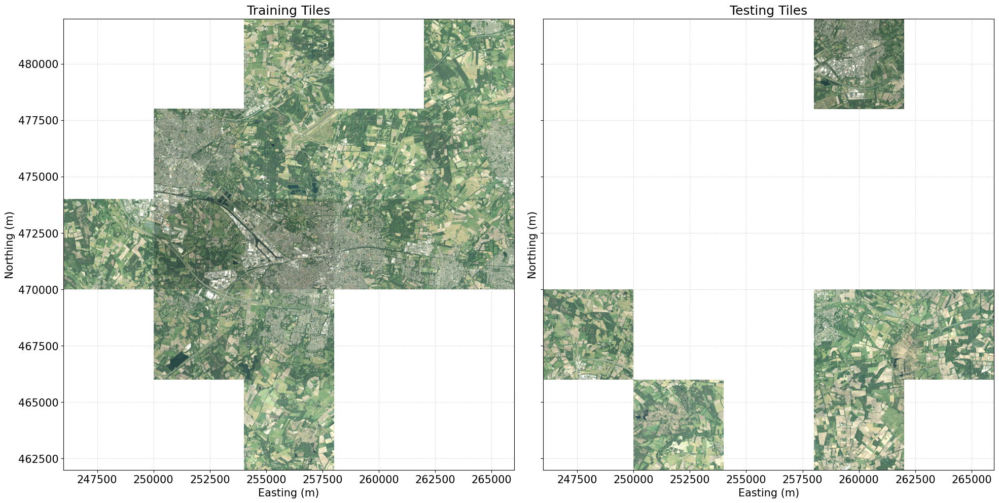

UNet for Farmland Detection: Experimenting with Beeldmaterial Imagery
1. Introduction

Fig 1. The study area map.
The Netherlands faces high nitrogen pollution from intensive farming.
Simpler approaches like NDVI thresholding would clump all vegetation together.
This project used Deep Learning to better differentiate farmland from other vegetation.
Study area: Enschede, the Netherlands.
2. Beeldmaterial Image Set
Fig 2. The chosen Beeldmaterial RGB tiles.
25cm Beeldmaterial RGB and CIR orthophotos were chosen for this project.
These tiles were resampled to 5m resolution to reduce computational time.
These tiles cover the whole of Enschede.
Acquisition date: Summer 2024.
3. NDVI Tiles Generation
Fig 3. The generated NDVI tiles.
The CIR orthophotos were used for generating NDVI tiles.
4. Training/ Testing Split

Fig 4. The selected training and testing tiles.
The RGB and NDVI image sets were split into training and testing tiles.